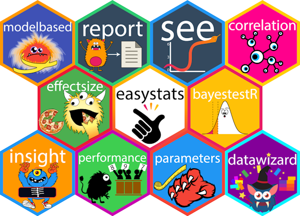

What is easystats?
easystats is a collection of R packages, which aims to provide a unifying and consistent framework to tame, discipline, and harness the scary R statistics and their pesky models.
However, there is not (yet) an unique “easystats” way of doing data analysis. Instead, start with one package and, when you’ll face a new challenge, do check if there is an easystats answer for it in other packages. You will slowly uncover how using them together facilitates your life. And, who knows, you might even end up using them all.

Installation

| Type | Source | Command |
|---|---|---|
| Release | CRAN | install.packages("easystats") |
| Development | r-universe | install.packages("easystats", repos = "https://easystats.r-universe.dev") |
| Development | GitHub | remotes::install_github("easystats/easystats") |
Finally, as easystats sometimes depends on some additional packages for specific functions that are not downloaded by default. If you want to benefit from the full easystats experience without any hiccups, simply run the following:
easystats::install_suggested()Citation
To cite the package, run the following command:
citation("easystats")
To cite easystats in publications use:
Lüdecke, Patil, Ben-Shachar, Wiernik, Bacher, Thériault, & Makowski
(2022). easystats: Framework for Easy Statistical Modeling,
Visualization, and Reporting. CRAN.
doi:10.32614/CRAN.package.easystats
<https://doi.org/10.32614/CRAN.package.easystats>
A BibTeX entry for LaTeX users is
@Article{,
title = {easystats: Framework for Easy Statistical Modeling, Visualization, and Reporting},
author = {Daniel Lüdecke and Mattan S. Ben-Shachar and Indrajeet Patil and Brenton M. Wiernik and Etienne Bacher and Rémi Thériault and Dominique Makowski},
journal = {CRAN},
doi = {10.32614/CRAN.package.easystats},
year = {2022},
note = {R package},
url = {https://easystats.github.io/easystats/},
}If you want to do this only for certain packages in the ecosystem, have a look at this article on how you can do so! https://easystats.github.io/easystats/articles/citation.html
Getting started
Each easystats package has a different scope and purpose. This means your best way to start is to explore and pick the one(s) that you feel might be useful to you. However, as they are built with a “bigger picture” in mind, you will realize that using more of them creates a smooth workflow, as these packages are meant to work together. Ideally, these packages work in unison to cover all aspects of statistical analysis and data visualization.
- report: üìú üéâ Automated statistical reporting of objects in R
- correlation: üîó Your all-in-one package to run correlations
- modelbased: üìà Estimate effects, group averages and contrasts between groups based on statistical models
- bayestestR: üëª Great for beginners or experts of Bayesian statistics
- effectsize: üêâ Compute, convert, interpret and work with indices of effect size and standardized parameters
- see: üé® The plotting companion to create beautiful results visualizations
- parameters: üìä Obtain a table containing all information about the parameters of your models
- performance: üí™ Models‚Äô quality and performance metrics (R2, ICC, LOO, AIC, BF, ‚Ķ)
- insight: üîÆ For developers, a package to help you work with different models and packages
- datawizard: üßô Magic potions to clean and transform your data
Frequently Asked Questions
How is easystats different from the tidyverse?
You’ve probably already heard about the tidyverse, another very popular collection of packages (ggplot, dplyr, tidyr, …) that also makes using R easier. So, should you pick the tidyverse or easystats? Pick both!
Indeed, these two ecosystems have been designed with very different goals in mind. The tidyverse packages are primarily made to create a new R experience, where data manipulation and exploration is intuitive and consistent. On the other hand, easystats focuses more on the final stretch of the analysis: understanding and interpreting your results and reporting them in a manuscript or a report, while following best practices. You can definitely use the easystats functions in a tidyverse workflow!
easystats + tidyverse = ❤️
Can easystats be useful to advanced users and/or developers?
Yes, definitely! easystats is built in terms of modules that are general enough to be used inside other packages. For instance, the insight package is made to easily implement support for post-processing of pretty much all regression model packages under the sun. We use it in all the easystats packages, but it is also used in other non-easystats packages, such as ggstatsplot, modelsummary, ggeffects, and more.
So why not in yours?
Moreover, the easystats packages are very lightweight, with a minimal set of dependencies, which again makes it great if you want to rely on them.
What are all the packages for? I’m lost!
Statistical models are scary monsters, and easystats is the best solution for expert and amateur stats hunters.
- insight contains the arsenal to capture them and dissect them. It is mostly meant to be used by experts who want to create their own tools.
- performance can be used to assess their scariness and value.
- effectsize is great to quantify and interpret their dangerousness (e.g., by how much variance they eat).
- parameters is useful to understand them by measuring their claws and taming them.
- modelbased allows you to unleash their power and use them at your service.
- datawizard contains useful potions and hunter equipment to survive in the stats jungle.
- bayestestR contains specific arrows and traps for a particular species of monsters (the monstrous Bayesians)
- see allows you to see clearer.
However, easystats can be used as a whole, by simply loading library(easystats) and using the functions from various packages without caring where they belong.
Documentation
Websites
Each easystats package has a dedicated website.
For example, website for parameters is https://easystats.github.io/parameters/.
Blog
In addition to the websites containing documentation for these packages, you can also read posts from easystats blog: https://easystats.github.io/blog/posts/.
Other learning resources
In addition to these websites and blog posts, you can also check out the following presentations and talks to learn more about this ecosystem:
https://easystats.github.io/easystats/articles/resources.html
Dependencies
easystats packages are designed to be lightweight, i.e., they don’t have any third-party hard dependencies, other than base-R packages or other easystats packages! If you develop R packages, this means that you can safely use easystats packages as dependencies in your own packages, without the risk of entering the dependency hell.

As we can see, the only exception is the {see} package, which is responsible for plotting and creating figures and relies on ggplot2, which does have a substantial number of dependencies.
Usage
Downloads
Download statistics for easystats packages from CRAN.
| Package | Total | Monthly |
|---|---|---|
| insight | 9,763,926 | 117,638 |
| datawizard | 6,447,095 | 115,127 |
| performance | 4,349,302 | 53,040 |
| parameters | 4,279,464 | 54,865 |
| bayestestR | 4,196,169 | 51,173 |
| effectsize | 3,182,371 | 42,432 |
| correlation | 1,202,193 | 16,932 |
| see | 962,016 | 11,877 |
| modelbased | 687,849 | 9,423 |
| report | 351,890 | 6,067 |
| easystats | 151,452 | 3,606 |
| Total | 35,573,727 | 482,180 |

Citations
Number of Google Scholar citations for easystats publications.
easystats::easystats_citations(sort_by = "cites")| Title | Journal | Year | Cites |
|---|---|---|---|
| performance: An R package for assessment,… | Journal of Open Source Software | 2021 | 6,068 |
| effectsize: Estimation of effect size indices and… | Journal of open source software | 2020 | 2,156 |
| bayestestR: Describing Effects and their… | Journal of Open Source Software | 2019 | 1,676 |
| Indices of Effect Existence and Significance in… | Frontiers in Psychology | 2019 | 1,004 |
| Methods and algorithms for correlation analysis in… | Journal of Open Source Software | 2020 | 833 |
| Extracting, computing and exploring the parameters… | Journal of Open Source Software | 2020 | 569 |
| see: An R package for visualizing statistical… | Journal of Open Source Software | 2021 | 152 |
| insight: A Unified Interface to Access Information… | Journal of Open Source Software | 2019 | 146 |
| The {easystats} collection of R packages | GitHub | 2020 | 129 |
| modelbased: An R package to make the most out of… | Journal of Open Source Software | 2025 | 121 |
| The report package for R: ensuring the use of best… | CRAN | 2019 | 62 |
| datawizard: An R package for easy data preparation… | Journal of Open Source Software | 2022 | 58 |
| Check your outliers! An introduction to… | Behavior Research Methods | 2024 | 56 |
| Phi, Fei, Fo, Fum: effect sizes for categorical… | Mathematics | 2023 | 46 |
| Automated Results reporting as a practical tool to… | URL https://easystats. github. io/report | 2023 | 12 |
| Choosing informative priors in Bayesian regression… | 2025 | 0 | |
| Total | 13,088 |
Contributing
We are happy to receive bug reports, suggestions, questions, and (most of all) contributions to fix problems and add features. Pull Requests for contributions are encouraged.
Here are some simple ways in which you can contribute (in the increasing order of commitment):
- Read and correct any inconsistencies in the documentation
- Raise issues about bugs or wanted features
- Review code
- Add new functionality
Code of Conduct
Please note that the ‘easystats’ project is released with a Contributor Code of Conduct. By contributing to this project, you agree to abide by its terms.